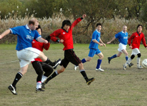
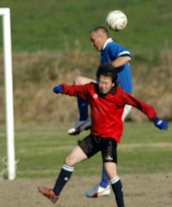

|
Misato, Sun 3rd Dec. Yet another Misato trip for the fast-improving Clash saw them take 3 more points in a match played in good spirits against Stoneds FC. Despite losing several players to international commitments (Japanese Proficiency Test) the Wall Street side pressured their opponents from the beginning and, in scoring 4 more goals, have already matched their season 3 tally.
Kazz Ishizaki opened the scoring after 25 minutes with a delightful curled effort from the edge of the box, followed soon afterwards by athletic forward Mick Dorrian with another long range effort, sadly missed by your reporter who was answering the call of nature. Some unkind observers described the goal as “mis-hit”. We prefer to say speculative, Mick is saying spectacular, and the truth is probably somewhere in between.
Clash took control of the midfield thanks to sterling efforts by Kazz and debutant Kristian Francis in the middle of the park, and man-of-the-match Masa Hanamura’s tough tackling and rampaging runs from full back. Further goals looked likely, the principal barrier being an offside trap beautifully marshaled by an over-enthusiastic linesman. They came in the second half though, with veteran front-man turned left back Sid Lloyd showing us that the striking instincts are still intact with a fine header from a perfect cross from Bryan Crowe. Scoring was rounded off when Kazz dinked the ball over the back line for Daylan Cosco to coolly finish for his second goal in consecutive games.
The fine team spirit displayed on the field was augmented by fine spirits for the team in the post-match celebrations, during which several lessons were learned. Firstly, it is possible for a Tokyo resident to wake up on Monday morning alone in a love hotel in Ibaraki-ken after a quiet Sunday afternoon kick-about in Saitama. Secondly, that falling backwards down an upwards escalator is dangerous. Thirdly, talking to your girlfriend after several bottles of shochu is not smart. And finally that you should never, under any circumstances puke in your kit bag or on your shoes.
Sunday afternoon football rocks..
Report by Andy Abbey
|